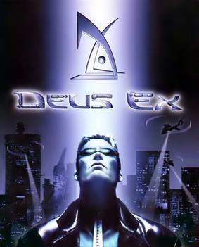

Deus Ex: Game Of The Year Edition (PC)



(Eidos)
Upon its initial release in June 2000, Deus Ex received unparalleled praise: it won countless awards, and was nominated by many gaming magazines as one of the best games ever. Now in 2002, Deus Ex enjoys a re-release, complete with multiplayer components added and much needed software patching.
A few years down the track a few flaws are now more readily apparent in Deus Ex: the artificial intelligence of the enemies is a little unconvincing in places, the game still runs slow on even a lot of high-end machines, and the graphics and animation are beginning to show their age. But in spite of these complaints, what made the game so great upon its initial release remains unchanged: Deus Ex is both compulsively playable and revolutionary in its design.
To explain the unique gameplay of Deus Ex, the closest comparison that can be made is to the classic System Shock games, with its fusion of Role Playing Game (RPG) elements into the classic First Person Shooter (FPS) like Half-Life or Quake. And while it is graphically similar to many other FPS’s and the action remains satisfying, Deus Ex is truly an RPG. You choose the areas in which your character improves and excels as you progress through the game, and the fiction of Deus Ex is superbly realised. The plot is integral and woven into the gameplay, and is one of the most finely crafted in any action game to date.
Set 50 years in the future, you play the role of JC Denton, a cybernetically enhanced agent working for UNATCO, a United Nations-sponsored anti-terrorist organization. As you work to take down the NSF, a deadly and powerful terrorist organization, you discover a complex and high-reaching conspiracy: that UNATCO is secretly controlled by the sinister organization Majestic 12.
All of this is slowly revealed as the player progresses through the game world, and the way you interact with those around you determines how they will react to you. At one point you are dropped off in the streets of Hong Kong, left to explore the markets and businesses, talk to the storeowners, and watch the unravelling sub-plot of the competing triad gangs. You can walk down into the subway and watch a fight taking place between triad gangs, or stroll down a street and observe the police mopping up a car crash. You can be a passive observer among all of these scenes – or you can whip out a gun and piss off any of the different factions.
As a reflection of the game’s true RPG nature, there are many different paths that can be taken in the game. You may choose to be a master lockpicker and hacker, able to hack into security systems and turn security bots against your enemies; or a heavy weapons specialist, outfitted with flame-throwers, plasma rifles, and guided missile launchers. There is always more than one way to solve the problems that are presented to you within the game: for example, one particular scene sees JC trapped within a Majestic 12 scientific laboratory. The stealth option allows you to avoid and creep past all the threats; or the more difficult (and highly violent) option of force may be used, in which you shoot down everyone in sight. But the best option is less than obvious: you can hack into the facilities’ security systems and release the genetically modified creatures that are trapped in cages to wreak havoc on all within.
It is the brilliant design, limitless depth, and almost flawless execution that make Deus Ex simply one of the best games ever made. One of the most versatile and highly detailed first-person games ever, Deus Ex has truly pushed the boundaries by offering an unparalleled level of choice to the player.
9.5/10